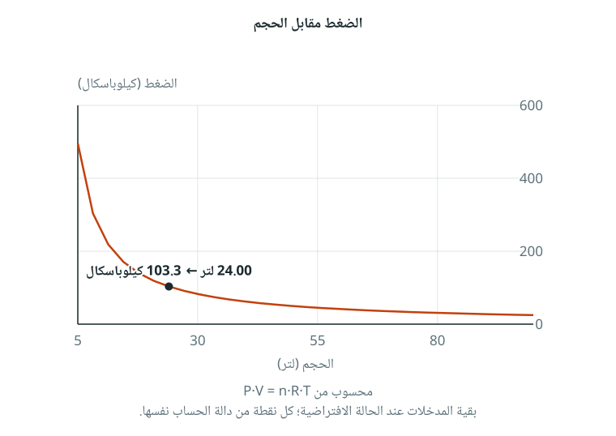

كيف يرتبط ضغط الغاز بحجمه وحرارته؟
غيّر عدد المولات والحجم والحرارة، وتابع الضغط والحرارة المطلقة.
بداية المقياس على الحالة المرجعية: عدد المولات 1.00 مول، الحجم 24.00 لتر، الحرارة 25.00 °م = 103.3 كيلوباسكال. محاكاة تعليمية لا قياس فيزيائي حقيقي: الأرقام تُحسب من النموذج لحظيًا.
افتراضات النموذج والمصدر
P·V = n·R·T
غاز مثالي بلا حجم جزيئي
لا قوى تجاذب بين الجزيئات
حرارة مطلقة بالكلفن
بعيد عن نقطة التكاثف
Molar gas constant R = 8.314462618 J/(mol·K) — NIST CODATA 2022
Thermodynamics: An Engineering Approach — الغاز المثالي — Cengel & Boles
الغاز المثالي نموذج يتجاهل حجم الجزيئات نفسها وقوى التجاذب بينها، فيبقى التفاعل بين الضغط والحجم والحرارة بسيطًا. المعادلة تقول إن حاصل ضرب الضغط في الحجم يتناسب مع عدد المولات والحرارة المطلقة. عمليًّا: تسخين غاز في حجم ثابت يرفع ضغطه، وتضييق حجمه عند حرارة ثابتة يرفع ضغطه أيضًا. النموذج يصلح للغازات الحقيقية عند ضغط منخفض وحرارة بعيدة عن التكاثف.
كيف تعمل الظاهرة؟
ضغط الغاز ناتج عن تصادم الجزيئات بالجدار. تسخين الغاز يزيد سرعتها المتوسطة فتزداد قوة كل تصادم وعددها، فيرتفع الضغط. وتضييق الحجم يقرّب الجزيئات من الجدار فترتفع وتيرة التصادم بلا تغيّر في سرعتها. المعادلة تجمع الأثرين في علاقة واحدة.
العلاقة بالأرقام
المعادلة: P·V = n·R·T. عند عدد المولات 1.00 مول، الحجم 24.00 لتر، الحرارة 25.00 °م، يعطي الحساب: الضغط = 103.3 كيلوباسكال؛ الحرارة المطلقة = 298.15 كلفن؛ الحجم بالمتر المكعب = 0.0240 م³. حالة «حجم كبير» (عدد المولات 1.00 مول، الحجم 100.00 لتر، الحرارة 25.00 °م): الضغط = 24.8 كيلوباسكال؛ الحرارة المطلقة = 298.15 كلفن؛ الحجم بالمتر المكعب = 0.1000 م³. حالة «حجم صغير» (عدد المولات 1.00 مول، الحجم 5.00 لتر، الحرارة 25.00 °م): الضغط = 495.8 كيلوباسكال؛ الحرارة المطلقة = 298.15 كلفن؛ الحجم بالمتر المكعب = 0.0050 م³. هذه أمثلة مولدة من دالة الحساب نفسها؛ وليست قياسات فعلية أو مواصفات لجهاز تجاري.
مفاهيم متقاربة
يُخلط بين الغاز المثالي والحقيقي: الحقيقي ينحرف عند الضغط العالي والحرارة القريبة من التكاثف، حيث يصير حجم الجزيئات وقوى التجاذب مؤثرة. ويُخلط بين الحرارة المئوية والمطلقة: المعادلة تحتاج الكلفن، فالصفر المئوي ليس صفر طاقة.
حدود التطبيق
النموذج يفترض جزيئات بلا حجم وقوى بينها معدومة، فلا يصلح قرب نقطة التكاثف ولا عند ضغوط عالية. ولا يصف الغازات القطبية بقوة عند الحرارة العادية، حيث تظهر انحرافات ملموسة عن السلوك المثالي.

| الكمية | القيمة | المصدر |
|---|---|---|
| الضغط — الحالة الافتراضية | 103.3 كيلوباسكال | [1] |
| الحرارة المطلقة — الحالة الافتراضية | 298.15 كلفن | [1] |
| الحجم بالمتر المكعب — الحالة الافتراضية | 0.0240 م³ | [1] |
المصادر
- 1 Molar gas constant R = 8.314462618 J/(mol·K) — NIST CODATA 2022. physics.nist.gov/cgi-bin/cuu/Value?r · اطُّلع عليه 2026-11-25
- 2 Thermodynamics: An Engineering Approach — الغاز المثالي — Cengel & Boles. www.mheducation.com/highered/product/thermodynamics-engineering-approach-cengel-boles/M9781259822674.html · اطُّلع عليه 2026-11-25
راجعه: عبدالله الهويدي · 2026-11-26 · آخر تحديث 2026-11-24
رجوع إلى المعمل